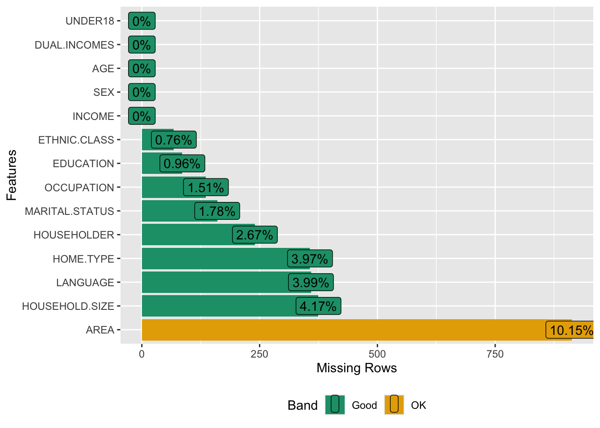

library(tidyverse)
library(tidymodels)
library(finetune)Tengku-Hanis01
tidymodels
prediction
yacsda
statlearning
trees
speed
string
Aufgabe
Bearbeiten Sie diese Fallstudie von Tengku Hanis!
Lösung
Die folgende Lösung basiert auf der oben angegebenen Fallstudie.
Pakete laden:
Daten importieren:
data(income, package = "kernlab")Datensatz vereinfachen:
set.seed(2021)
income2 <-
income %>%
filter(INCOME == "[75.000-" | INCOME == "[50.000-75.000)") %>%
slice_sample(n = 600) %>%
mutate(INCOME = fct_drop(INCOME),
INCOME = fct_recode(INCOME,
rich = "[75.000-",
less_rich = "[50.000-75.000)"),
INCOME = factor(INCOME, ordered = F)) %>%
mutate(across(-INCOME, fct_drop))Check:
DataExplorer::plot_missing(income)
{DataExplorer} sieht nach einem nützlichen Paket aus. Check it out hier!
Daten aufteilen (“Spending our data budget”):
set.seed(2021)
dat_index <- initial_split(income2, strata = INCOME)
dat_train <- training(dat_index)
dat_test <- testing(dat_index)Kreuzvalidierung:
set.seed(2021)
dat_cv <- vfold_cv(dat_train, v = 10, repeats = 1, strata = INCOME)Rezept:
dat_rec <-
recipe(INCOME ~ ., data = dat_train) %>%
step_impute_mode(all_predictors()) %>%
step_ordinalscore(AGE, EDUCATION, AREA, HOUSEHOLD.SIZE, UNDER18)Als Modell (im engeren Sinne) nutzen wir ein Random-Forest-Modell:
rf_mod <-
rand_forest(mtry = tune(),
trees = tune(),
min_n = tune()) %>%
set_mode("classification") %>%
set_engine("ranger")Wie man sieht, geben wir 3 Tuningparameter an.
Modell und Rezept zum Workflow zusammenfassen:
rf_wf <-
workflow() %>%
add_recipe(dat_rec) %>%
add_model(rf_mod)Tuning Grids definieren:
Wichtig ist, dass wir genau die Parameter angeben im Grid, die wir auch zum Tunen getaggt haben. Das kann man händisch erledigen:
# Regular grid:
reg_grid <- grid_regular(mtry(c(1, 13)),
trees(),
min_n(),
levels = 3)
# Random grid mit 100 Kandidaten:
rand_grid <- grid_random(mtry(c(1, 13)),
trees(),
min_n(),
size = 100)Wir speichern die Vorhersagen aller Folds im Train-Sample, um die Modellgüte im Train- bzw. Validierungssample anschauen zu können:
ctrl <- control_grid(save_pred = T,
extract = extract_model)Error: object 'extract_model' not foundmeasure <- metric_set(roc_auc)Außerdem haben wir als Gütemaß roc_auc definiert.
In der Fallstudie wurde noch extract = extract_model bei control_grid() ergänzt. Das lassen wir der Einfachheit halber mal weg.
Parallelisieren auf mehreren Kernen, um Rechenzeit zu sparen:
library(doParallel)
# Create a cluster object and then register:
cl <- makePSOCKcluster(4)
registerDoParallel(cl)Wie viele CPUs hat mein Computer?
detectCores(logical = FALSE)[1] 4Jetzt geht’s ab: Tuning und Fitting!
Hier das “reguläre Gitter” an Tuningkandidaten:
set.seed(2021)
tune_regular <-
rf_wf %>%
tune_grid(
resamples = dat_cv,
grid = reg_grid,
control = ctrl,
metrics = measure)Error: object 'ctrl' not foundstopCluster(cl)Die Modellgüte im Vergleich zwischen den Tuning-Kandidaten kann man sich schön ausgeben lassen:
autoplot(tune_regular)Error: object 'tune_regular' not foundGeht aber nur, wenn man oben gesagt hat, dass man die Predictions speichern möchte.
Welche Kandidatin war am besten:
show_best(tune_regular)Error: object 'tune_regular' not foundSo kann man sich die beste Kandidatin anschauen:
show_best(tune_regular) %>%
arrange(-mean) %>%
slice(1)Error: object 'tune_regular' not foundAber man kann sich auch von Tidymodels einfach die beste Kandidatin sagen lassen:
best_rf <-
select_best(tune_regular, "roc_auc")Error: object 'tune_regular' not foundAuf dieser Basis können wir jetzt den Workflow finalisieren, also die Tuningparameter einfüllen:
final_wf <-
rf_wf %>%
finalize_workflow(best_rf)Error: object 'best_rf' not foundfinal_wfError: object 'final_wf' not foundUnd mit diesen Werten den ganzen Train-Datensatz fitten:
test_fit <-
final_wf %>%
last_fit(dat_index) Error: object 'final_wf' not foundWie gut ist das jetzt?
test_fit %>%
collect_metrics()Error: object 'test_fit' not foundCategories:
- tidymodels
- prediction
- yacsda
- statlearning
- trees
- speed
- string